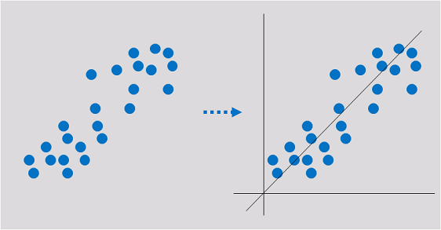
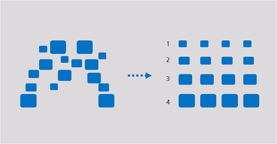
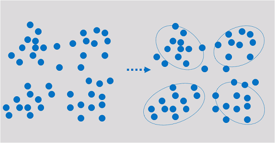

Machine learning is classified into supervised, unsupervised, and reinforcement learning.
Regression reflects the time feature of data attributes and generates a function that maps one data attribute to an actual variable prediction to find the dependency between the variable and attribute. Regression mainly analyzes data and predicts data and data relationship. Regression can be used for customer development, retention, customer churn prevention, production lifecycle analysis, sales trend prediction, and targeted promotion.

Classification involves defining a set of categories based on the common features of objects and identifying which category an object belongs to. Classification can be used for customer classification, customer properties, feature analysis, customer satisfaction analysis, and customer purchase trend prediction.

Clustering involves grouping a set of objects in such a way that objects in the same group are more similar to each other than to those in other groups. Clustering can be used for customer segmentation, customer characteristic analysis, customer purchase trend prediction, and market segmentation.

Clustering analyzes data objects and produces class labels. Objects are grouped based on the maximized and minimized similarities to form clusters. In this way, objects in the same cluster are more similar to each other than to those in other clusters.